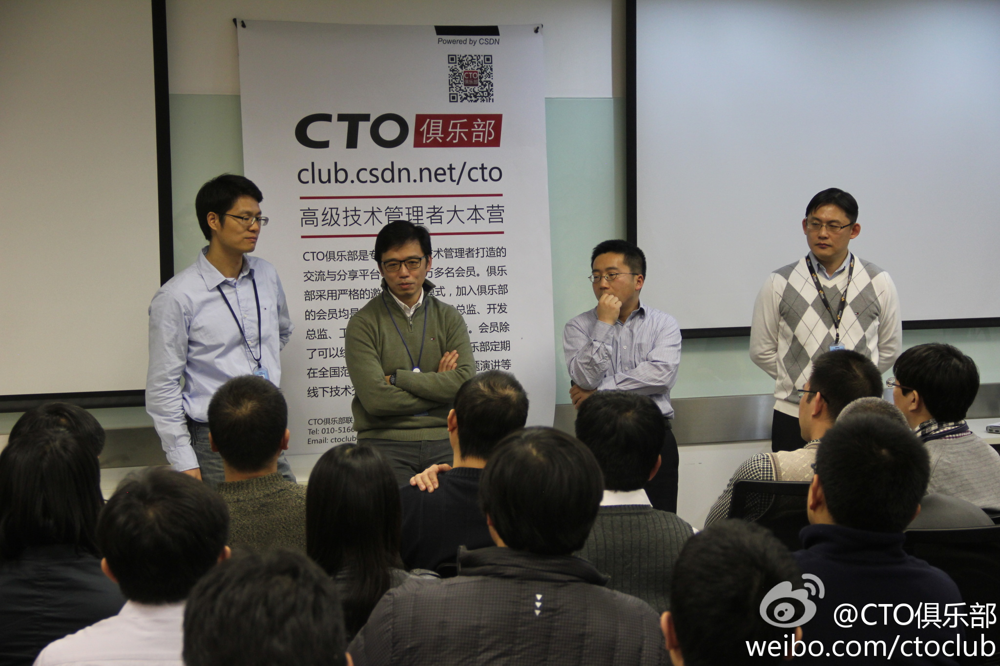

你应该@ 下你老板。 //@爱折腾的海宇Zhen:顶头上司今儿上去演讲了，我来刷个存在感 //@Ada李力:这期走进企业反响很不错，报名150多人，限于场地，只通知了70人，95％以上的到会率，现场亚马逊自己的员工都没地方坐，在会议室后面整整站了一下午。－以后有更多走进企业活动。@CTO俱乐部:CSDN&《程序员》总编@刘江总编 主持“CTO俱乐部走进亚马逊AWS”活动Q&A环节，现场听众踊跃提问，问题涉及平台迁移、亚马逊对中小企业的策略、AWS认证问题、如何优化成本以及大家都比较关注的信息防泄漏等，一一得到各位嘉宾解答。 
 //@爱折腾的海宇Zhen:顶头上司今儿上去演讲了，我来刷个存在感
//@爱折腾的海宇Zhen:顶头上司今儿上去演讲了，我来刷个存在感 //@Ada李力:这期走进企业反响很不错，报名150多人，限于场地，只通知了70人，95％以上的到会率，现场亚马逊自己的员工都没地方坐，在会议室后面整整站了一下午。－以后有更多走进企业活动。
//@Ada李力:这期走进企业反响很不错，报名150多人，限于场地，只通知了70人，95％以上的到会率，现场亚马逊自己的员工都没地方坐，在会议室后面整整站了一下午。－以后有更多走进企业活动。